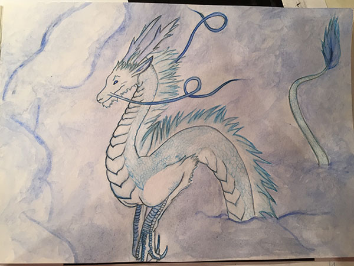

My whole life I was interested in different kinds of art.
Since the young age I was experimenting and trying myself in various ways of self expression. I did decoupage, collage, tapestry, knitting, embroidery, mosaics etc. But most of all I always enjoyed drawing.
I started to take drawing classes since age of 7 and continue to practice it today. When I was little it was my dream to become a painter. However, I never considered my paintings and drawings as good, which is why I kept doing it just as hobby.
I don't draw as often as I wish I would, but I try doing it every other week.
